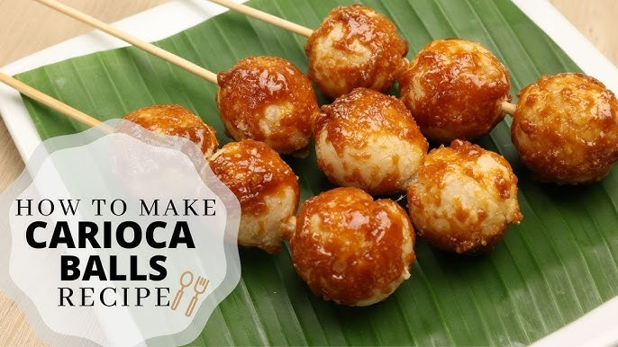

CARIOCA

Description
Carioca is a delightful Filipino snack made from glutinous rice flour and coconut, rolled into balls, deep-fried, and coated with a sweet sugar syrup. Known for its chewy texture and subtle coconut flavor, Carioca has a satisfying balance of crunch and sweetness, making it a favorite street food treat across the Philippines. The bite-sized balls are often served on skewers, making them convenient to enjoy on the go.
This snack’s warm, caramelized coating contrasts with the chewy, soft interior, creating a texture that’s both rich and fun to eat. Carioca’s appeal lies in its simplicity and the delicious sweetness that pairs well with coffee or tea, providing a quick yet comforting snack for Filipinos everywhere.
Ingredients
- 1 cup glutinous rice flour
- 1/2 cup grated coconut
- 1/2 cup water
- Vegetable oil, for frying
- 1/2 cup brown sugar
- 1/4 cup water (for syrup)
- Skewers (optional)
Steps
- In a mixing bowl, combine glutinous rice flour, grated coconut, and 1/2 cup water. Mix until a smooth, dough-like consistency forms.
- Take small portions of the dough and roll them into bite-sized balls.
- Heat oil in a pan over medium heat.
- Fry the rice balls in batches until they are golden brown and slightly crispy on the outside.
- In a separate pan, prepare the sugar syrup by combining brown sugar and 1/4 cup water. Heat and stir until the sugar dissolves and a thick syrup forms.
- Remove the fried rice balls from the oil and drain on paper towels.
- Dip each fried ball into the sugar syrup to coat it completely.
- If desired, skewer the carioca balls in sets of two or three for easy serving.
- Let cool slightly before serving. Enjoy warm!